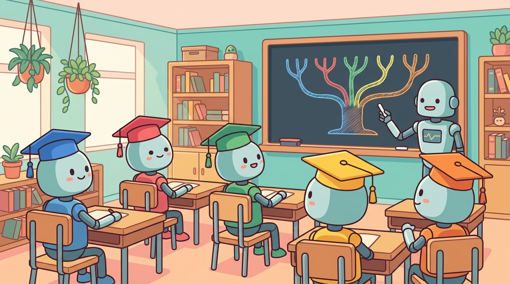

Five tested course tracks for using this book in formal undergraduate or graduate programs and in professional bootcamps. Each track lists its audience, prerequisites, week-by-week reading and lab schedule, assignment cadence, and a capstone project. Tracks share a common spine (Foundations and Working with LLMs) and then branch by focus: training, retrieval, agents, evaluation, or strategy.
Each week assumes ~5 to 7 hours of reading plus 3 to 5 hours of lab work for engineering tracks, and roughly half that for survey tracks aimed at non-engineers.
Track Overview
| Track | Duration | Audience | Capstone |
|---|---|---|---|
| Track 1: Undergraduate Engineering | 14 weeks (one semester) | 3rd-year CS or related; comfortable Python; some linear algebra | Working RAG application over a chosen corpus |
| Track 2: Undergraduate Research | 14 weeks (one semester) | 3rd or 4th year; honors or research track | Replicate a published 2024 to 2026 result |
| Track 3: Graduate Engineering | 2 x 14 weeks (two semesters) | 1st-year M.Sc. or industry-track Ph.D. | Multi-agent system with RAG, eval harness, deployment |
| Track 4: Graduate Research | 2 x 14 weeks (two semesters) | Research-track M.Sc. or 1st-year Ph.D. | Original research project on a frontier topic |
| Track 5: Professional Bootcamp | 10 weeks intensive (~25 hr/week) | Practicing engineers transitioning to LLM work | Production-ready agentic application with cost analysis |
Track 1: Undergraduate Engineering (one semester)
Audience. Third-year computer science or software engineering majors who can write Python comfortably, have seen basic linear algebra, and have completed at least one prior systems or web course. No prior machine learning or NLP background is assumed.
Goals. By the end of the semester, students can call frontier-model APIs, design effective prompts, build a working retrieval-augmented generation (RAG) pipeline over a corpus they choose, and deploy it behind a streaming endpoint with basic evaluation in place.
Prerequisites. Python 3.10+, Git, basic command line, basic linear algebra (matrix multiplication, dot products). The book's Appendix G and Appendix A cover gaps.
| Week | Reading | Lab / Assignment |
|---|---|---|
| 1 | Chapter 0 (ML and PyTorch foundations) | Lab 0: train a tiny classifier in PyTorch. Setup: API keys, repo scaffolding. |
| 2 | Chapter 1 (NLP and text representation) | Lab 1: tokenize and embed a small corpus. |
| 3 | Chapter 2 (Tokenization, BPE) | Lab 2: train a BPE tokenizer; compare to GPT-4o tokenizer. |
| 4 | Chapter 3 (Sequence models and attention) | Lab 3: implement scaled dot-product attention from scratch. |
| 5 | Chapter 4 (Transformer architecture) | Lab 4: build a decoder-only Transformer block. |
| 6 | Chapter 5 (Decoding strategies) | Lab 5: greedy vs. sampling vs. nucleus on a small model. Midterm. |
| 7 | Chapter 13 (LLM APIs) | Lab 6: structured-output JSON pipeline with retry and timeout. |
| 8 | Chapter 14 (Prompt engineering) | Lab 7: design and evaluate prompts on a held-out set. |
| 9 | Chapter 22 (Embeddings and vector DBs) | Lab 8: index a corpus with sentence-transformers and FAISS. |
| 10 | Chapter 23 (RAG) | Lab 9: end-to-end RAG with retrieval, re-ranking, and generation. |
| 11 | Chapter 24 (Conversational AI) | Lab 10: multi-turn dialogue with conversation memory. |
| 12 | Section 34.1 (Eval fundamentals) | Capstone milestone 1: corpus chosen; baseline RAG running. |
| 13 | Section 35.1 (Deployment) | Capstone milestone 2: deployed behind a streaming endpoint. |
| 14 | Wrap-up + capstone presentations | Capstone delivery + 10-minute team demos. |
Capstone. Build a RAG application over a domain corpus the team chooses (lecture notes, a textbook, an API documentation set, a regulatory dataset). Required components: chunking strategy, embedding pipeline, retrieval with re-ranking, grounded generation, basic evaluation harness with at least 30 held-out questions, and a deployed streaming endpoint. Graded on correctness, faithfulness to the corpus, and engineering quality.
Track 2: Undergraduate Research (one semester)
Audience. Honors or research-track undergraduates who plan to pursue graduate study or research internships. Comfortable with mathematical notation and willing to read papers.
Goals. By the end of the semester, students can read and critique a 2024 to 2026 LLM paper, replicate a published result on accessible hardware, and explain the mechanisms behind their reproduction at the level of attention patterns or training dynamics.
Prerequisites. Same as Track 1 plus a prior course in machine learning, statistics, or signals.
| Week | Reading | Lab / Assignment |
|---|---|---|
| 1 | Chapter 0 | Lab 0 + paper-reading template (read one paper; submit a 1-page critique). |
| 2 | Chapter 1 | Critique a 2018 to 2020 word-embedding paper. |
| 3 | Chapter 2 | Reproduce a BPE training run. |
| 4 | Chapter 3 | Implement induction-head detector. |
| 5 | Chapter 4 | Train a small Transformer; plot loss curves. |
| 6 | Chapter 5 | Compare decoding strategies on a small evaluation set. Midterm (paper-reading exam). |
| 7 | Chapter 7 (Pre-training, scaling laws) | Reproduce a Chinchilla-style scaling curve at small scale. |
| 8 | Chapter 8 (Modern landscape) | Survey: pick three frontier models; compare on a benchmark. |
| 9 | Chapter 9 (Reasoning and test-time compute) | Reproduce best-of-N improvement on AIME-style problems. |
| 10 | Chapter 10 (Inference optimization) | Quantization study (FP16 vs INT8 vs INT4). |
| 11 | Chapter 11 (Interpretability) | Reproduce a circuit analysis result on a small model. |
| 12 | Chapter 18 (Fine-tuning) and Chapter 19 (PEFT) | LoRA-tune a 7B model on a domain dataset. |
| 13 | Capstone work | Capstone milestone: reproduction in progress. |
| 14 | Capstone presentations | 15-minute paper-style presentations + 5-page write-up. |
Capstone. Replicate a published 2024 to 2026 LLM paper (with instructor approval) at a scale that fits the available compute budget. Deliverables: code, a 5-page write-up with figures matching the original where applicable, and a list of any deviations from the paper. Graded on faithfulness to the original methodology and on the depth of analysis of any discrepancies.
Track 3: Graduate Engineering (two semesters)
Audience. First-year M.Sc. students or industry-track Ph.D. students who already have some ML background and want to ship production LLM systems.
Goals. By the end of the year, students can train and adapt models, build agent systems, design evaluation harnesses, and operate production LLM services with monitoring, cost controls, and safety guardrails.
Prerequisites. Track 1 content (or equivalent: prior ML course plus production engineering experience).
| Week | Reading | Lab / Assignment |
|---|---|---|
| 1 to 5 | Chapters 0 to 5 (Foundations, condensed) | Foundations sprint: build a Transformer from scratch by week 5. |
| 6 | Chapter 7 | Reproduce a scaling-law curve on a tiny dataset. |
| 7 | Chapter 8 | Comparative study of three frontier models. |
| 8 | Chapter 9 | Test-time compute scaling experiment. |
| 9 | Chapter 10 | Quantization + KV-cache benchmarking. |
| 10 | Chapter 13 + Chapter 14 | Multi-provider prompt management with failover. |
| 11 | Chapter 17 (Synthetic data) | Generate a synthetic SFT dataset with a frontier model. |
| 12 | Chapter 18 + Chapter 19 | QLoRA-tune a 7B model on the synthetic dataset. |
| 13 | Chapter 20 (Alignment, RLHF, DPO) | Train a reward model and run DPO at small scale. |
| 14 | Wrap-up + take-home final | Take-home: design a fine-tuning pipeline for a chosen domain. |
| Week | Reading | Lab / Assignment |
|---|---|---|
| 1 | Chapter 22 | Embedding + vector-DB benchmark across 3 backends. |
| 2 | Chapter 23 | RAG with re-ranking and faithfulness evaluation. |
| 3 | Chapter 24 | Multi-turn agent with memory. |
| 4 | Chapter 26 (Agents) | Build an agent loop with tools. |
| 5 | Chapter 27 (Tool use, MCP) | Implement an MCP server. |
| 6 | Chapter 28 (Multi-agent) | Supervisor-worker pattern. Midterm. |
| 7 | Chapter 29 (Specialized agents) | Pick one agent type and build a working version. |
| 8 | Chapter 25 (Agent safety) | Add sandboxing, rate limiting, audit logging. |
| 9 | Chapter 34 (Evaluation) | Build a golden eval set and a CI evaluation harness. |
| 10 | Chapter 35 (Production) | Deploy with monitoring, cost caps, and rollback. |
| 11 to 13 | Capstone work | Three-week capstone sprint. |
| 14 | Capstone presentations | 20-minute presentations + 8-page write-up + working demo. |
Capstone. Multi-agent system with retrieval-augmented generation, an evaluation harness running in CI, deployment with monitoring, cost caps, and a rollback path. Graded on the production-readiness of the entire pipeline.
Track 4: Graduate Research (two semesters)
Audience. Research-track M.Sc. students or first-year Ph.D. students aiming for top-tier conference publications.
Goals. By the end of the year, students have a frontier-topic research project under way, with a written proposal, an experimental plan, baseline results, and the start of a workshop-paper draft.
Prerequisites. Track 2 content (or equivalent: comfortable with reading and writing ML papers).
| Week | Reading | Lab / Assignment |
|---|---|---|
| 1 to 5 | Chapters 0 to 5 + selected papers | Each week: implement one foundational mechanism + critique one paper. |
| 6 to 8 | Chapters 6 to 8 (pre-training, modern landscape, reasoning) | Reproduce a scaling result; analyze a reasoning model. |
| 9 to 10 | Chapters 9 to 10 (inference, interpretability) | Mechanistic interpretability mini-project. |
| 11 to 12 | Chapters 14 to 17 (training, alignment) | Train and evaluate a fine-tuned model on a research benchmark. |
| 13 to 14 | Research-proposal writing | 5-page research proposal due. Peer review. |
| Week | Reading | Lab / Assignment |
|---|---|---|
| 1 to 2 | Chapter 31 (Multimodal) | Multimodal experiment. |
| 3 to 4 | Chapter 37 (Safety, ethics, regulation) | Red-teaming exercise. |
| 5 to 6 | Chapter 33 (Frontiers) | Implement one alternative architecture. |
| 7 to 13 | Capstone research | Original-research project sprint with weekly check-ins. |
| 14 | Capstone presentations | Workshop-style talks + paper draft due. |
Capstone. Original research project on a frontier topic. Required deliverables: a workshop-paper-quality draft (8 pages), reproducible code, and a 20-minute talk.
Track 5: Professional Bootcamp (10 weeks intensive)
Audience. Practicing software engineers and ML engineers transitioning into LLM work. Expect 25 to 30 hours per week of part-time engagement, structured around a working capstone.
Goals. By the end of 10 weeks, participants ship a production-ready agentic application with an evaluation harness, monitoring, cost controls, and a written architecture document explaining the model, infrastructure, and risk choices.
Prerequisites. Three or more years of professional software engineering. No ML background required.
| Week | Reading | Lab / Assignment |
|---|---|---|
| 1 | Chapter 8 (Modern LLM landscape) | Pick a model, set up an account, run inference on the chosen domain. |
| 2 | Chapter 13 + Chapter 14 | Build a structured-output API client with retries and observability. |
| 3 | Chapter 15 (Hybrid ML+LLM) | Combine a classical model with an LLM in one pipeline. |
| 4 | Chapter 22 + Chapter 23 | RAG over a real document corpus from your domain. |
| 5 | Chapter 24 | Multi-turn conversation with memory. |
| 6 | Chapter 26 + Chapter 27 | Agent loop with tool calls (function calling or MCP). |
| 7 | Chapter 28 | Add a second agent in a supervisor-worker pattern. |
| 8 | Chapter 34 | Build a golden eval set and add it to CI. |
| 9 | Chapter 35 | Deploy with monitoring, cost caps, and rollback. |
| 10 | Chapter 31 (Strategy) | Capstone delivery + a 4-page architecture and risk document. |
Capstone. Production-ready agentic application in a domain of the participant's choice. Required: agent with tools, retrieval over a real corpus, evaluation harness, monitoring, cost controls, and a written architecture document covering model selection, infrastructure, and risk decisions. Graded on whether the system would survive a real production launch.
Reference appendices used across tracks
For all five tracks, the following appendices serve as on-demand references rather than required reading:
- Appendix A (Mathematical Foundations) and Appendix B (ML Essentials) for foundational gaps.
- Appendix G (Python for LLMs) and Appendix H (Environment Setup) for the toolchain.
- for worked-through fixes to common end-of-chapter problems.
- Appendix C (HuggingFace) and Appendix D (LangChain) for ecosystem familiarity.
- Reading Pathways for goal-based routes when a student wants to explore beyond the syllabus.